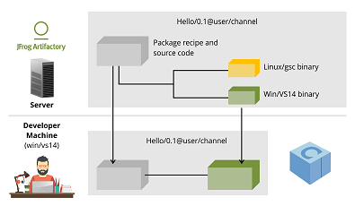

Conan（一）：初识Conan（C/C++包管理器）
0x0 Introduction & Install
Conan is OSS, with an MIT license.
Conan项目有如下几个值得关注的地方：
- 分布式包管理（Decentralized package manager）

| Server | 场景 | 特点 |
|---|---|---|
| Conan server | private | Conan client&server都是OSS, MIT license，可随意修改使用 |
| JFrog Artifactory | private | 更好的服务 |
| JFrog Bintray | public | 共享 |
- 二进制的管理方法（Binary Manage）
- 服务端是一对多的模式：
recipe + binaries - 使用者获取 “recipe + 适合的binary”

- 跨平台&支持多种构建系统（Cross platform, build system agnostic）
- os（compiler） + arch
- Conan可以和任意一种build system配合使用。常用的如Cmake
安装
1 | pip install conan |
0x1 Get Started (以Cmake为例)
准备一个基本的工程
准备conanfile.txt¶
1
2
3
4
5[requires]
Poco/1.9.0@pocoproject/stable
[generators]
cmakeconna install <conanfile.txt path>
CMakeLists.txt 集成上一步的输出 : conanbuildinfo.cmake
1
2include(${CMAKE_BINARY_DIR}/conanbuildinfo.cmake)
conan_basic_setup()Cmake config & build
0x2 参考链接
- Conan : Introduction
- Conan : Install
- Conan : Get Started
- Continuous Integration for C/C++ Projects with Jenkins and Conan
微信扫一扫，阅读/分享